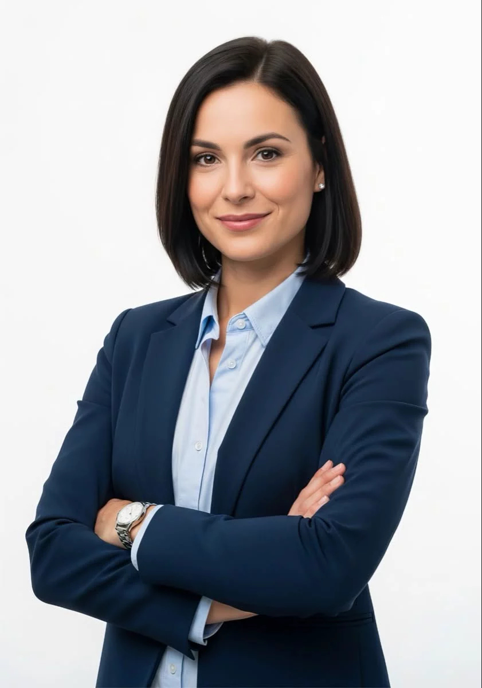

Cabdiraxmaan Xasan waa maamulaha shirkadda. Waxa uu leeyahay khibrad dheer oo dhinaca ganacsiga iyo maamulka ah. Waxa uu mas'uul ka yahay qorsheynta, hagidda shaqaalaha, iyo hubinta in adeegyada shirkaddu ay gaaraan heer sare

Fadumo Cali waa madaxa suuq-geynta shirkadda. Waxay ka shaqeysaa xayeysiinta adeegyada shirkadda iyo soo jiidashada macaamiil cusub. Waxay diyaarisaa qorshayaasha suuq-geynta, maamulka warbaahinta bulshada,iyo xiriirka macaamiisha
Maxamed Nuur waa madaxa tiknoolajiyadda shirkadda. Waxa uu mas'uul ka yahay horumarinta mareegaha, ilaalinta nidaamyada kombiyuutarada, iyo hubinta in adeegyada dijitaalka ah ay si habsami leh u shaqeeyaan. Waxa uu maamulaa kooxda farsamada,
Sahra Axmed waa madaxa adeegga macaamiisha. Waxay mas'uul ka tahay la xiriirka macaamiisha, ka jawaabista su'aalahooda, iyo hubinta in ay helaan adeeg tayo leh